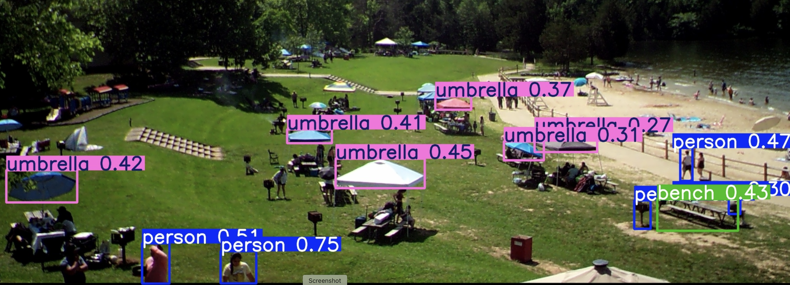
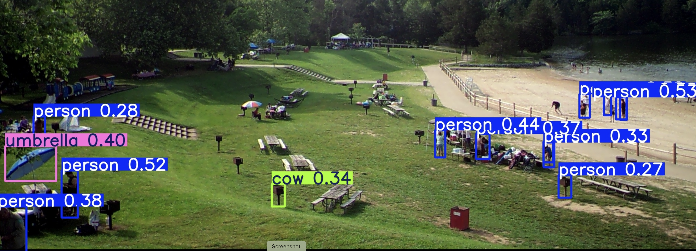
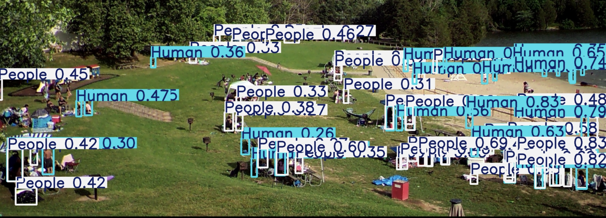
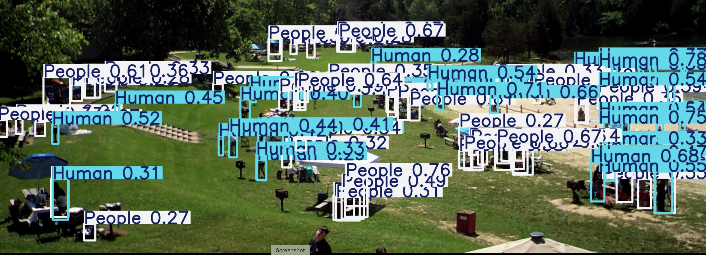

This project leveraged computer vision to estimate park visitation patterns over time. We used You Only Look Once (YOLO) object detection models to identify and count individuals in frame grabs extracted from surveillance and trail cameras. Analysts applied YOLO to batches of images representing different time intervals (hourly, daily, seasonal) to quantify park usage and identify peak visitation periods. The output informed staffing decisions, infrastructure planning, and recreational management.
Tools & Skills Used: Python, YOLOv5, OpenCV, FFmpeg, Pandas, Jupyter Notebooks, Roboflow, image annotation tools, machine learning traning, R, R Markdown.




The table below summarizes the performance of the YOLO-based detection system, including accuracy metrics obtained from comparing automated counts to manual tallies at selected observation points.